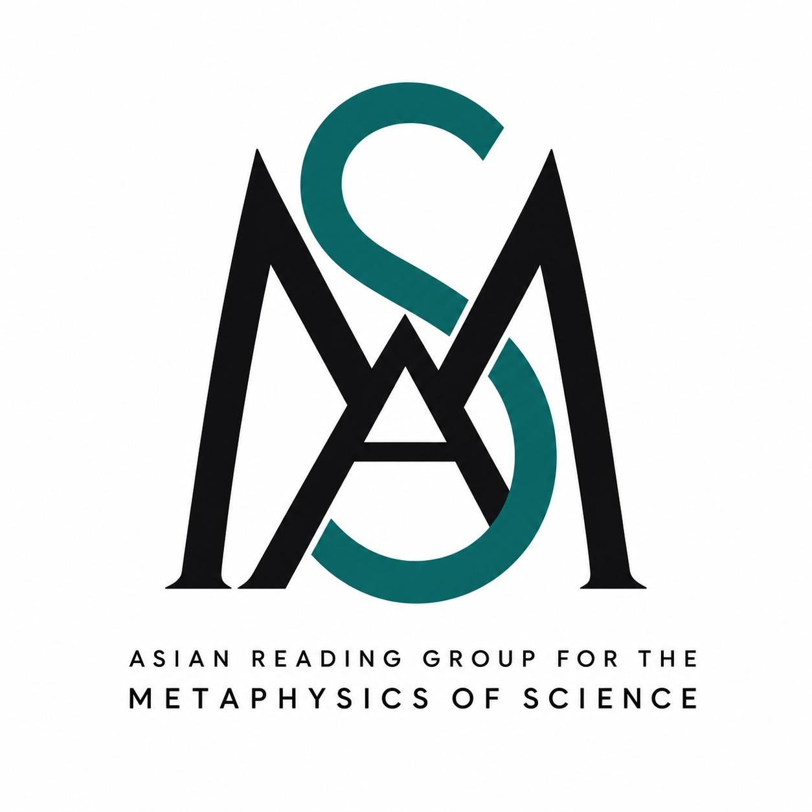

A reading group in philosophy of science
Asian Reading Group for
the Metaphysics of Science
This season, we are reading Bas van Fraassen's The Scientific Image — the book that launched constructive empiricism, and asked what it would mean for science to aim at empirical adequacy rather than truth.
About the group
We are a small, open reading group based in Asia for anyone — graduate students, faculty, and interested readers alike — working through the metaphysics and epistemology of science. Each season we take up a single book and read it closely, chapter by chapter, rather than surveying a field from a distance.
Sessions are conversational rather than lecture-style. Whoever hosts a session prepares a short summary of the chapter and two or three questions to open discussion; everyone else is expected to have read the chapter, not to have mastered it. Disagreement with the author — and with each other — is the point.
No prior background in philosophy of science is assumed. A willingness to sit with a hard argument for an hour is.
The book
Van Fraassen sets out to give empiricism a way of answering scientific realism without falling back into logical positivism. He takes the language of science literally — theoretical claims say what they appear to say — but denies that accepting a theory requires believing it is true. What it requires, on his view, is believing only that the theory is empirically adequate: that what it says about observable things is right.
The book builds this position, constructive empiricism, through three connected arguments. It first lays out the case against scientific realism and for empirical adequacy as the aim of science. It then reworks what a scientific theory even is, treating a theory as a family of models rather than a set of sentences, with observability doing the work that truth does for the realist. Finally it develops a pragmatic theory of explanation — why-questions get better or worse answers relative to a context, not a context-free notion of explanatory power — and closes with van Fraassen's own replies to his critics.
Few books did more to reopen the realism debate in twentieth century philosophy of science, and it remains the reference point against which most anti-realist positions since are measured.
Reading plan
We are moving through the book's four main arguments in order. Each runs across two or three sessions, at a pace the group sets as it goes — usually one chapter, sometimes two, per meeting.
- IArguments concerning scientific realism
- Why van Fraassen thinks realism overreaches, and what it would mean instead for the aim of science to be empirical adequacy rather than truth.
- IITo save the phenomena
- Constructive empiricism stated in full, against its positivist and realist rivals, and the history behind "saving the phenomena" as a goal for theory.
- IIITheories as models
- The semantic view of theories, the observable/unobservable distinction doing real philosophical work, and what it costs to give up theories-as-sets-of-sentences.
- IVExplanation, probability, and replies to critics
- The pragmatics of explanation and why-questions, probability as a modality, and van Fraassen's own responses to the book's harshest objections.
Format
- Cadence. Fortnightly, roughly ninety minutes a session.
- Where. Online, with an in-person meeting when enough of us are in the same city — details shared in the WhatsApp channel.
- Language. English, with discussion open in whatever language helps a point land.
- Text. Any edition of The Scientific Image (Oxford, 1980) works; page references are given at each session for the standard edition.
- Cost. None. Bring the book and the willingness to argue about it.
Join the group
The WhatsApp channel carries session dates, readings, and logistics. Instagram carries shorter notes and quotes between meetings. Both are open to anyone interested — you don't need an invitation to ask to join.
Questions first: REPLACE-WITH-YOUR-EMAIL@example.com